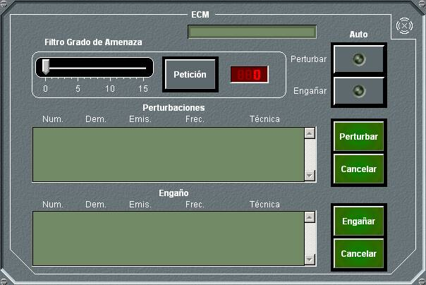
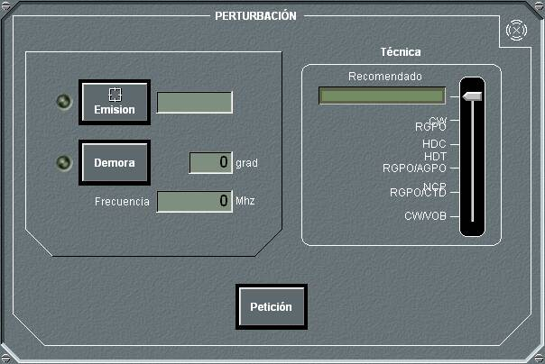

En este panel de detalle de ECM se muestran las perturbaciones y engaños que está realizando el equipo de ECM, con información del número de perturbación, la demora de la emisión, su número y frecuencia, así como la técnica empleada.
En las unidades submarinas solo se puede realizar perturbaciones o engaños con el ECM si están en superficie o tienen el mástil correspondiente izado.
Para perturbaciones o emisiones realizadas sobre equipos clasificados, por motivos de confidencialidad (siempre que el nivel de clasificación de los datos del equipo emisor sean superior al de la unidad), se ocultan los siguientes parámetros: Frecuencia y Técnica (sólo si se está perturbando o engañando en modo automático). Ver Anexos – Seguridad.
Además se pueden ejecutar las siguientes acciones:
- Establecer un Filtro de Grado de Amenaza para comportamiento automático. Deslizando la barra de desplazamiento hasta el valor deseado y pulsando el botón Petición, el Grado de Amenaza seleccionado aparecerá en la ventana correspondiente.
- Activar la Perturbación Automática. Una vez establecido un filtro por Grado de Amenaza, al pulsar el botón Perturbar – Auto, se perturbarán automáticamente las emisiones con grado de amenaza igual o superior al seleccionado, utilizando la técnica recomendada. Cuando el ESM no dispone de datos de librería de emisiones, bien por no tener Capacidad de Identificación o bien porque los datos sean clasificados se emplearán las contramedidas recomendadas en la tabla ECM Standard, en función del Grado de Amenaza de la emisión detectada.
- Activar el Engaño Automático. Una vez establecido un filtro por Grado de Amenaza, al pulsar el botón Engañar – Auto, se aplicarán engaños automáticamente sobre las emisiones con grado de amenaza igual o superior al seleccionado, utilizando las técnica recomendada. Al igual que para Perturbaciones automáticas, si no se dispone de técnica recomendada, se emplearán las recomendadas en la tabla ECM Standard. En el caso de tener activado también la perturbación automática, se aplicará el engaño solamente a aquellas emisiones que no estén siendo perturbadas.
- Perturbar manualmente. Al pulsar el botón Perturbar se despliega el panel de detalle de perturbaciones.
- Engañar manualmente. Al pulsar el botón Engañar se despliega el panel de detalle de perturbaciones.
- Cancelar Perturbaciones / Engaños. Eligiendo una perturbación / engaño de la lista y pulsando el botón Cancelar cesa la perturbación / engaño correspondiente.
El panel de detalle de Perturbación / Engaño manual permite realizar las siguientes acciones:

- Seleccionar una emisión para perturbarla, tomándola de la emisión en Hook.
- Seleccionar una demora y frecuencia para perturbarla.
- Seleccionar una técnica de perturbación / engaño, a elegir entre las disponibles en el equipo. Este panel muestra la técnica recomendada según la emisión, obtenida de la librería de ESM.